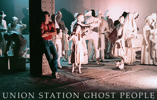

This is a multidisciplinary sculpture artist commission site.
We create custom-made artwork and are able to produce multiple solutions for any clients concepts.
Fiberglass sculpture fabrication of:
Finishes available in cold cast bronze, brass, copper, and nickel.
Additional Services
